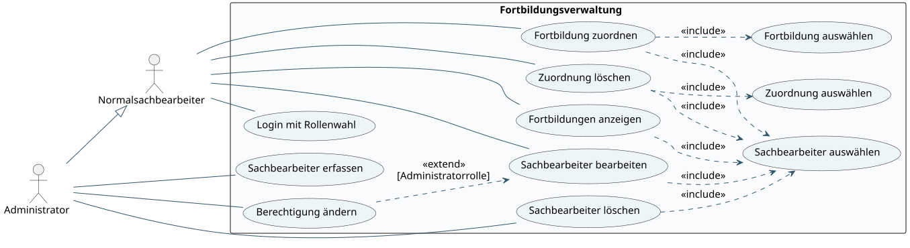
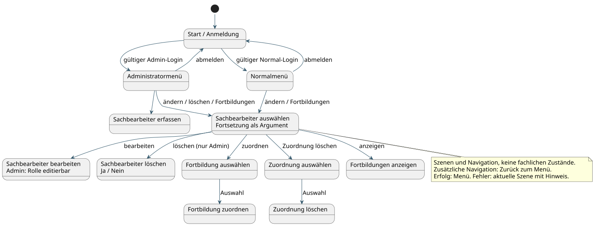
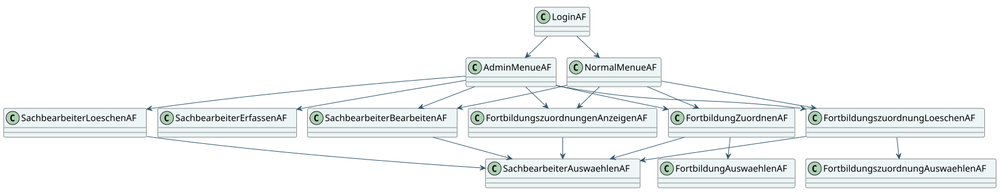
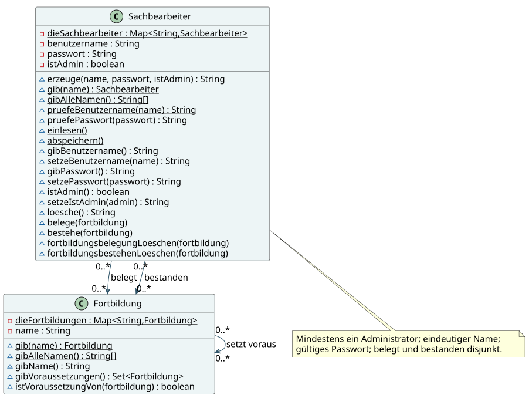
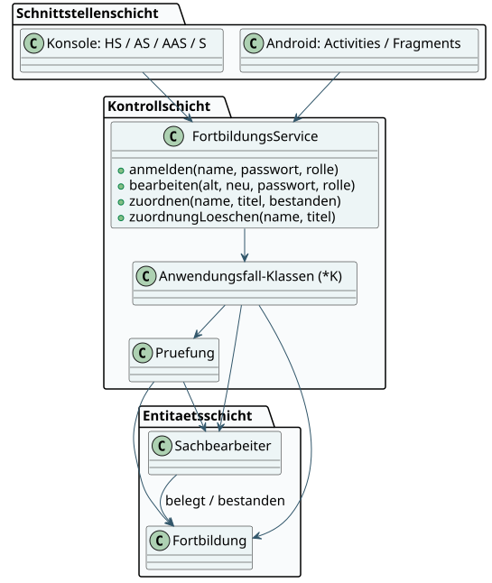
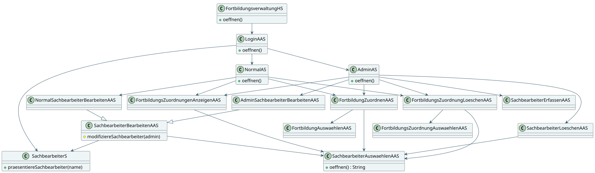
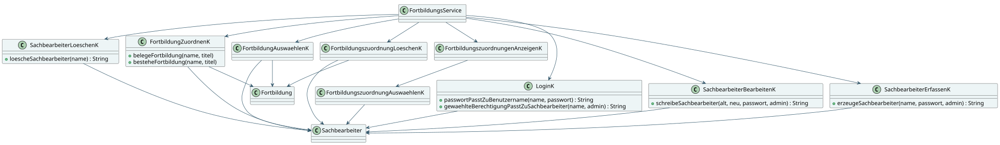
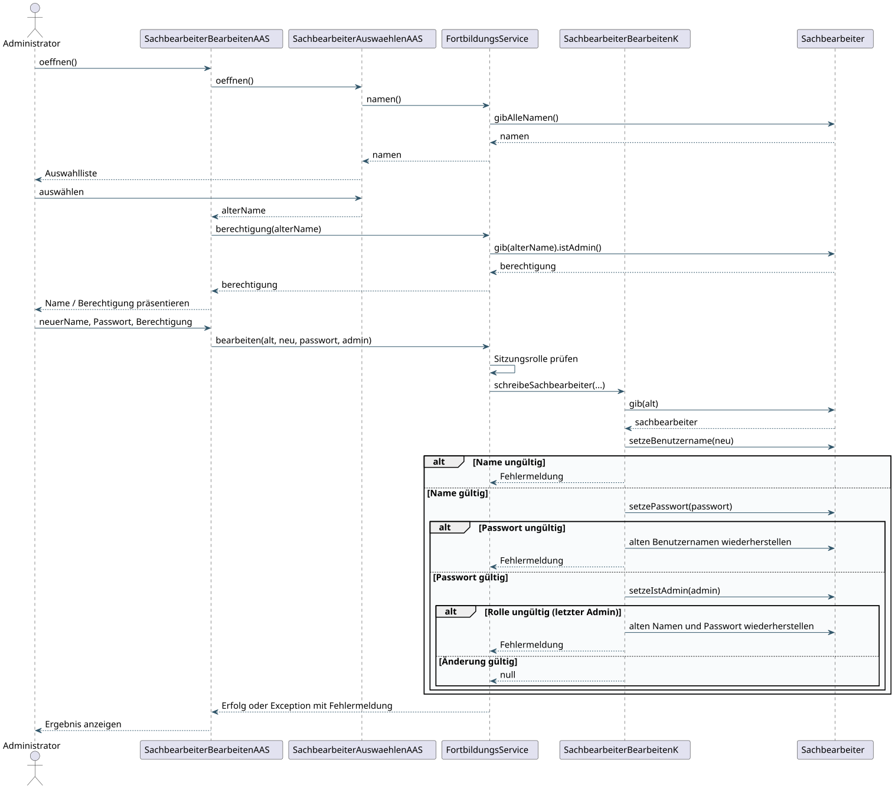
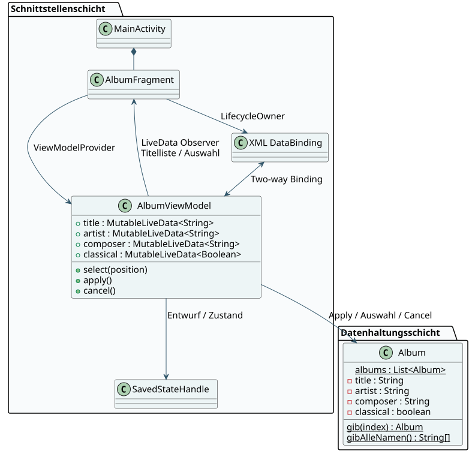

Fortbildungsverwaltung
& Albumverwaltung
Implementierung, Architektur, Oberflächenentwürfe und Prüfungen.
Das Paket enthält die Java-Konsolenanwendung, die Android-Fortbildungsverwaltung und eine eigenständige Android-Albumverwaltung. Beide Fortbildungsoberflächen verwenden dieselbe Java-Fachlogik. Die Dokumentation rekonstruiert den zuvor erfolgten Abgleich mit den Aufgabenblättern und dem Vorlesungsskript.
1 · Aufgabenabgleich
| Blatt | Anforderung | Umsetzung / Nachweis |
|---|---|---|
| 01 | Anwendungsfalldiagramm und GUI-Entwürfe | 01_anwendungsfaelle; Mockups in Abschnitt 4 |
| 02 | Szenemodell, AF-Klassendiagramm, Eingabe und Auswaehlen | 02_szenemodell; 03_af_klassendiagramm; Konsolenquellen |
| 03 | Entitäten, Schichtenarchitektur, Validierungstabelle | 04_entitaeten; 05_schichten; 05a/05b; Prüfmatrix |
| 04 | Standardmethoden, Sequenzdiagramm, Entitätsklassen | Klassenkatalog; 06_sequenz_bearbeiten; Sachbearbeiter/Fortbildung.java |
| 05 | Kontrollklassen und Behandlung fehlgeschlagener Änderungen | *K.java; FortbildungsService; RegressionTest/ServiceTest |
| 06 | Konsolenstart, Sichtklasse, Login und Rollenmenüs | FortbildungsverwaltungHS/HK; SachbearbeiterS; LoginAAS; AdminAS/NormalAS |
| 07 | Erfassen, Auswählen, Bearbeiten und Löschen | Sachbearbeiter* AAS/K; gemeinsame Bearbeitungsoberklasse; Rollenprüfung |
| 08 | Fortbildungen auswählen, zuordnen, anzeigen und löschen | Fortbildung* AAS/K; Auswahlfilter; Abhängigkeitsprüfung |
| 09 | Android-Activities, Fragmente, Sichtlayouts, Login und Menüs | android/verwaltung mit gemeinsamem Java-Modul core |
| 10 | Android-Benutzerverwaltung, Auswahl vor Aktion, Ja/Nein | SachbearbeiterAuswaehlenAAS; gemeinsame Editierfragmente; Bestätigungen |
| 11 | Album, Fragment, ViewModel, LiveData, DataBinding und Layouts | android/album; Hoch-/Querformat; AlbumViewModelTest; 07_album |
2 · Architektur und Abläufe
Die Schnittstellenschicht nimmt Eingaben entgegen, präsentiert Daten und navigiert. Kontrollklassen prüfen Anwendungsfälle und koordinieren Entitäten. Sachbearbeiter und Fortbildung verwalten die Fachobjekte. Die Kontrollschicht liefert Fehler zurück oder wirft eine Exception mit Fehlermeldung; die Oberfläche entscheidet über die Darstellung.
FortbildungsService verbindet die vorhandenen Kontrollklassen und prüft die gewählte Sitzungsrolle. Normale Sachbearbeiter können bestehende Konten bearbeiten, aber weder Konten erstellen/löschen noch Berechtigungen ändern. Ein Administrator kann sich bewusst in Normalrolle anmelden. Ein gelöschtes oder in einer Adminsitzung herabgestuftes Konto verliert seinen Sitzungszugriff. Eine Umbenennung erhält die Identität der Sitzung.
Die Konsole verwendet Singleton-Dialoge, die Hilfsklassen Eingabe/Auswaehlen und eine gemeinsame Sachbearbeitersicht. Der Start navigiert nach der Begrüßung direkt zur Anmeldung. Vor personenbezogenen Aktionen wird ein Sachbearbeiter ausgewählt; Fortbildungsaktionen verwenden zusätzliche Auswahldialoge. Ungültige fachliche Schritte werden entweder bereits aus der Auswahl ausgeschlossen oder mit einer Meldung abgewiesen.
In Android sind HS und AS AppCompatActivities; AAS und die vier Sichtklassen sind Fragmente. Wiederverwendete Sichtlayouts werden über includes zusammengesetzt. Die Activity tauscht den aktiven Anwendungsfall als Fragment aus. Die Fortsetzung und der gewählte Name werden im Bundle übergeben. Alle Fragmente besitzen parameterlose Konstruktoren, damit Android sie nach Rotation wiederherstellen kann. Die Kontrollfassade wird im Lifecycle aus der Application bezogen; Konstruktoren benötigen keinen Android-Kontext.
Die Hauptmenüs bieten nur die für die Rolle vorgesehenen Aktionen. Nach erfolgreichen Änderungen wird gespeichert und zum Menü zurückgekehrt. Die Normal-Bearbeitung erbt den gemeinsamen Ablauf; ihre Radioknöpfe sind deaktiviert. Löschen zeigt eine Ja/Nein-Bestätigung. Android speichert in einer privaten App-Datei, die Konsole beim regulären Beenden oder EOF im Arbeitsverzeichnis. Es wird zuerst eine temporäre Datei geschrieben und danach die Zieldatei ersetzt. Beschädigte Daten werden nicht durch einen leeren Start überschrieben.
3 · Diagramme
Die SVGs sind zoombar; die editierbaren PlantUML-Quellen liegen daneben. Breite Klassendiagramme bitte bei Bedarf in Originalgröße öffnen. Das Szenemodell beschreibt Navigation und keine fachlichen Zustände.
Anwendungsfälle und Rollen
SVG in Originalgröße · PlantUML-Quelle


Szenen und Navigation
SVG in Originalgröße · PlantUML-Quelle


AF-Klassendiagramm vor der Schichtenaufteilung
SVG in Originalgröße · PlantUML-Quelle


Entitäten, Attribute, Methoden und Beziehungen
SVG in Originalgröße · PlantUML-Quelle


Drei Schichten und gemeinsame Kontrollfassade
SVG in Originalgröße · PlantUML-Quelle


Schnittstellenklassen und Navigation
SVG in Originalgröße · PlantUML-Quelle


Kontrollklassen und Entitäten
SVG in Originalgröße · PlantUML-Quelle


Auswählen, präsentieren und modifizieren
SVG in Originalgröße · PlantUML-Quelle


Album: zwei Schichten und Datenbindung
SVG in Originalgröße · PlantUML-Quelle


4 · Oberflächenentwürfe
Diese Mockups sind Entwürfe zur Aufgabenstellung, keine Emulator-Screenshots. Die implementierten Android-Dialoge verwenden diese Felder und Abläufe; die Systemdarstellung kann geräteabhängig abweichen.
Fortbildungsverwaltung
Benutzername◉ Administrator
○ Normalsachbearbeiter
Fehler erscheinen im Formular.
Normalrolle: ohne Erfassen/Löschen.
Auswahl führt zum zuvor gewählten Anwendungsfall.
◉ Normalsachbearbeiter
○ Administrator
Beim Bearbeiten bedeutet ein leeres Passwortfeld: beibehalten. In Normalrolle ist die Berechtigung nicht editierbar.
Soll Otto wirklich gelöscht werden?
Der letzte Administrator bleibt geschützt.
Nur zulässige nächste Schritte. Danach Bestätigung mit Ja/Nein.
Löschen: Zuordnung auswählen und bestätigen. Bestehende Abhängigkeiten werden geprüft.
☑ Classical
☐ Classical
5 · Prüfmatrix
| Prüfung | Anwendungsfall | Verantwortung | Verhalten |
|---|---|---|---|
| Leere/ungültige Menüwahl | alle Menüs | Schnittstelle: Auswaehlen | Erneute Eingabe statt ungültigem Arrayzugriff |
| Leere Auswahl | Auswählen/Zuordnen | Kontrolle und Schnittstelle | Hinweis statt Endlosschleife |
| Benutzername: mindestens ein Zeichen, nur deutsches Buchstabenalphabet und Unterstrich | Erfassen/Bearbeiten | Entität: Sachbearbeiter | Vor Übernahme prüfen |
| Benutzername eindeutig; eigener unveränderter Name erlaubt | Erfassen/Bearbeiten | Entität | Map-Schlüssel und Objektname bleiben konsistent |
| Passwort: mindestens 10 Zeichen, je 2 Groß-/Kleinbuchstaben, Ziffern und Sonderzeichen | Erfassen/Bearbeiten | Entität | Ungültige Änderung ablehnen |
| Passwort passt zum Namen | Login | LoginK mit Entitätsdaten | Einheitliche Fehlermeldung, keine Sitzung |
| Gewählte Adminrolle erlaubt | Login | LoginK / FortbildungsService | Normale Benutzer dürfen nicht als Admin anmelden |
| Admin darf bewusst die Normalrolle wählen | Login/Änderungen | Kontrollfassade | Sitzungsrolle bestimmt Rechte |
| Normalrolle darf nicht erfassen, löschen oder Rechte ändern | Benutzerverwaltung | Kontrollfassade und Rollenmenü | Auch direkte Serviceaufrufe werden geprüft |
| Letzter Administrator darf nicht gelöscht/herabgestuft werden | Löschen/Bearbeiten | Entität | Änderung zurücknehmen und Hinweis ausgeben |
| Unbekannter Benutzer oder Kurs | Referenzierende Aktionen | Pruefung / Kontrollklassen | Fehler statt NullPointerException |
| Kombinierte Änderung vollständig oder gar nicht | Bearbeiten | SachbearbeiterBearbeitenK | Rollback von Name/Passwort bei späterem Fehler |
| Keine doppelte Belegung; keine Belegung nach Bestehen | Zuordnen | Entität und Kontrollauswahl | Ablehnen / aus Auswahl ausschließen |
| Alle Voraussetzungen müssen bestanden sein | Belegen | Entität; FortbildungAuswaehlenK | Ungültige Belegung verhindern |
| Bestehen nur nach Belegung | Bestehen | Entität | Belegung entfernen, Bestehen eintragen |
| Bestandene Voraussetzung einer belegten ODER bestandenen Fortbildung schützen | Zuordnung löschen | Entität / Kontrolle | Löschung mit Hinweis ablehnen |
| Nicht vorhandene Zuordnung nicht als gelöscht melden | Zuordnung löschen | Kontrolle | Fehlermeldung |
| Abbruch übernimmt nichts | Löschen / Album Cancel | Schnittstelle / ViewModel | Entität unverändert |
| Defekte Speicherdatei | Start | Datenhaltung + Hauptschnittstelle | Laden abbrechen; Datei nicht überschreiben |
| Gelöschtes/herabgestuftes Sitzungskonto | Benutzerverwaltung | Kontrollfassade | Sitzung verliert ihre Gültigkeit |
6 · Albumverwaltung
Die Klasse Album mit den vier vorgegebenen Datensätzen ist die einzige Datenhaltungsklasse. Das ViewModel gehört zur Präsentationslogik. Es hält einen Formularentwurf in MutableLiveData. Two-way DataBinding synchronisiert Eingaben und Entwurf; ein Observer mit View-Lifecycle aktualisiert die Titelliste.
Apply überträgt alle Entwurfswerte in das gewählte Album und aktualisiert dessen Listentitel. Cancel lädt die letzten bestätigten Werte zurück. Ein Albumwechsel lädt Title, Artist, Composer und Classical und verwirft unbestätigte Eingaben. Classical steuert die Editierbarkeit von Composer. ViewModel und SavedStateHandle erhalten Auswahl, Entwurf und bestätigte Albumwerte bei Rotation bzw. Wiederherstellung einer Sitzung. Es gibt keine dauerhafte Albumdatei; eine neue Sitzung beginnt mit den Vorgabedaten.
Im Hochformat liegt die Liste oben, im Querformat links. Beide XML-Varianten verwenden dasselbe scrollbare Formular. Die EditText-Felder sind gleich breit und 52 dp hoch. Ihre Beschriftungen sind vertikal zentriert. Checkbox und Beschriftungen beginnen an derselben Führungslinie. Cancel und Apply liegen in einer gemeinsamen Feldzeile mit genau 30 dp Abstand.
7 · Testen und Vorführen
scripts/test_console.py kompiliert mit UTF-8 und allen javac-Warnungen. RegressionTest und ServiceTest prüfen die Fachlogik; zusätzliche Konsolenszenarien prüfen Ein-/Ausgabe und Neustarts. Alle Testdaten liegen in eigenen temporären Verzeichnissen, sodass reale Anwendungsdaten unverändert bleiben.
Die fünf Album-Unit-Tests prüfen Auswahl, Apply/Listentitel, Cancel, Auswahlwechsel und Wiederherstellung. Espresso-Tests für beide Apps sind enthalten. Den Unterschied zwischen tatsächlich ausgeführten Tests und noch nötigen Gerätetests hält das Testprotokoll fest.
| Vorführung auf Gerät / Emulator | Erwartetes Ergebnis |
|---|---|
| Falsches Passwort / unerlaubte Adminrolle | Hinweis im Login, kein Zugriff auf Menü |
| Admin in Normalrolle | Normales Menü; Berechtigung beim Bearbeiten ausgegraut |
| Umbenennen und erneut auswählen | Neuer Name vorhanden, alter Name nicht mehr vorhanden |
| Löschen mit Nein und Ja | Nein verändert nichts; Ja entfernt zulässigen Benutzer |
| Rotation in Auswahl/Bearbeitung | Fragmentargumente und Eingabefelder bleiben erhalten |
| Fortbildung: Voraussetzung / Belegung / Bestehen / Löschen | Nur gültige Schritte; abhängige bestandene Voraussetzung geschützt |
| Prozess neu starten | Fortbildungsdaten bleiben gespeichert; neue Anmeldung nötig |
| Album 0 und Album 3 auswählen | Title, Artist, Composer und Classical wechseln passend |
| Classical aus/ein | Composer nicht editierbar/editierbar |
| Titel ändern und Apply | Modell und Listentitel ändern sich |
| Felder ändern und Cancel | Letzte bestätigte Werte kehren zurück |
| Album mit unbestätigtem Entwurf wechseln | Entwurf verworfen |
| Hoch-/Querformat und Rotation während Entwurf | Liste oben/links; Entwurf erhalten; Formular erreichbar |
| Große Schrift und kleine Anzeige | Beschriftungen, Eingaben und Knöpfe visuell prüfen |
8 · Standardmethoden und Klassenkatalog
Die Übersicht ergänzt die Klassendiagramme mit den konkreten Signaturen der Konsolen- und Fachklassen. oeffnen, Auswahl, Präsentation und Modifikation strukturieren die Dialoge; Android setzt diese Abläufe an den Lifecycle-Stellen onCreate und onViewCreated um.
| Klasse | Implementierte Signaturen |
|---|---|
| AdminAS | void oeffnen() |
| AdminK | |
| AdminSachbearbeiterBearbeitenAAS | public void oeffnen() |
| Auswaehlen | public static String waehleAus(String[] alternativen) |
| Eingabe | public static String eingeben(String eingabeAufforderung) |
| Fortbildung | static Map<String, Fortbildung> gibDieFortbildungen(); static void setzeDieFortbildungen(Map<String, Fortbildung> fortbildungen); static String[] gibAlleNamen(); static Fortbildung gib(String name); String gibName(); boolean istVoraussetzungVon(Fortbildung fortbildung); Set<Fortbildung> gibVoraussetzungen() |
| FortbildungAnzeigenK | |
| FortbildungAuswaehlenAAS | public String oeffnen(String name, boolean bestanden) |
| FortbildungAuswaehlenK | |
| FortbildungZuordnenAAS | public void oeffnen() |
| FortbildungZuordnenK | |
| FortbildungsService | private static void pruefe(String fehler); public void laden(java.io.File datei); public void speichern(); public void anmelden(String name, String passwort, boolean admin); public void abmelden(); public boolean istAngemeldet(); public boolean istAdminRolle(); private void pruefeSitzung(); private void pruefeAdmin(); public String[] namen(); public boolean berechtigung(String name); public void erfassen(String name, String passwort, boolean admin); public void bearbeiten(String alt, String neu, String passwort, boolean admin); public void loeschen(String name); public String[] moeglicheFortbildungen(String name, boolean bestanden); public void zuordnen(String name, String titel, boolean bestanden); public String[] zuordnungen(String name, boolean bestanden); public void zuordnungLoeschen(String name, String titel) |
| FortbildungsZuordnungAuswaehlenAAS | public String oeffnen(String name) |
| FortbildungsZuordnungLoeschenAAS | public void oeffnen() |
| FortbildungsZuordnungenAnzeigenAAS | public void oeffnen() |
| FortbildungsverwaltungHK | void laden(); void speichern() |
| FortbildungsverwaltungHS | public static void main(String[] args); void oeffnen() |
| FortbildungszuordnungAuswaehlenK | String[] gibBestandeneFortbildungenNamen(String benutzername); String[] gibBelegteFortbildungenNamen(String benutzername) |
| FortbildungszuordnungLoeschenK | String loescheFortbildungszuordnung(String name, String titel); String[] gibBelegteFortbildungen(String name); String[] gibBestandeneFortbildungen(String name) |
| FortbildungszuordnungenAnzeigenK | |
| LoginAAS | void oeffnen() |
| LoginK | |
| NormalAS | void oeffnen() |
| NormalK | String[] menue() |
| NormalSachbearbeiterBearbeitenAAS | public void oeffnen() |
| Pruefung | static Sachbearbeiter sachbearbeiter(String name); static Fortbildung fortbildung(String name) |
| Sachbearbeiter | static String[] gibAlleNamen(); static Sachbearbeiter gib(String benutzername); private static void fuegeHinzu(Sachbearbeiter sachbearbeiter); static boolean mindestensEinSachbearbeiterExistiert(); static boolean mindestensEinAdminExistiert(); static String pruefeBenutzername(String benutzername); static String pruefePasswort(String passwort); static String erzeuge(String benutzername, String passwort, boolean istAdmin); boolean istBestanden(Fortbildung fortbildung); boolean istBelegt(Fortbildung fortbildung); String gibBenutzername(); String setzeBenutzername(String neuerBenutzername); String gibPasswort(); String setzePasswort(String passwort); boolean istAdmin(); String setzeIstAdmin(boolean istAdmin); boolean mindestensEineFortbildungszuordnungExistiert(); String loesche(); void belege(Fortbildung fortbildung); void bestehe(Fortbildung fortbildung); void fortbildungsbelegungLoeschen(Fortbildung fortbildung); void fortbildungsbestehenLoeschen(Fortbildung fortbildung); public static void main(String[] args); static void alleNamenAusgeben(); Collection<Fortbildung> gibBestandeneFortbildungen(); Collection<Fortbildung> gibBelegteFortbildungen(); static void setzeSpeicherdatei(java.io.File datei); static void abspeichern(); static void einlesen() |
| SachbearbeiterAuswaehlenAAS | public String oeffnen() |
| SachbearbeiterAuswaehlenK | |
| SachbearbeiterBearbeitenAAS | protected void modifiziereSachbearbeiter(boolean rolleAenderbar) |
| SachbearbeiterBearbeitenK | |
| SachbearbeiterErfassenAAS | public void oeffnen() |
| SachbearbeiterErfassenK | |
| SachbearbeiterK | |
| SachbearbeiterLoeschenAAS | public void oeffnen() |
| SachbearbeiterLoeschenK | |
| SachbearbeiterS | String name(String text); String passwort(String text); boolean rolle(); void praesentiereSachbearbeiter(String name) |
9 · Quellen und Grenzen
- Mitgelieferte Aufgabenblätter 01–11; Lastenheft F10, F150, F200, F250 und F300.
- UserInterfaceDesignVersionWS2026_2027.pdf: Schichten, AAS/AS/S/K/HS, Standardmethoden und Sequenzabläufe.
- Android Gradle Plugin 8.7: Gradle 8.9, JDK 17 und API 35.
- DataBinding mit LiveData und ViewModel.
Die Java-Serialisierung und lokale Passwortspeicherung folgen dem vorhandenen Übungsmodell. Dieses Projekt ist eine Praktikumsanwendung. Die Installation von Android Studio auf dem eigenen Rechner und die praktische Vorführung auf einem Gerät bleiben lokale Arbeitsschritte.